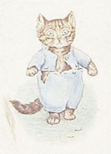
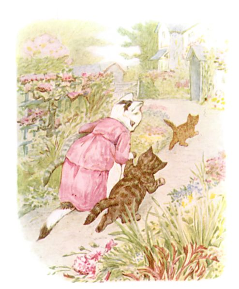
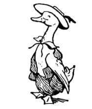
いたずらっこの みんなへ ささぐ
―― とくに うちの にわの へいを のぼる こどもたちへ
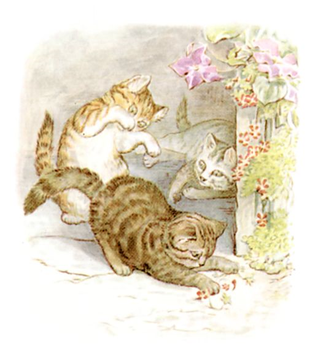
むかしむかし ３びきの こねこが おりました。 なまえは ミトンズ、 ねこぬこタム、 モペット。
みんな それぞれ けなみも みじかく ふわふわ かわいらしく、 とぐちの あたりで ごろごろ、 ほこりを たてつつ たわむれます。
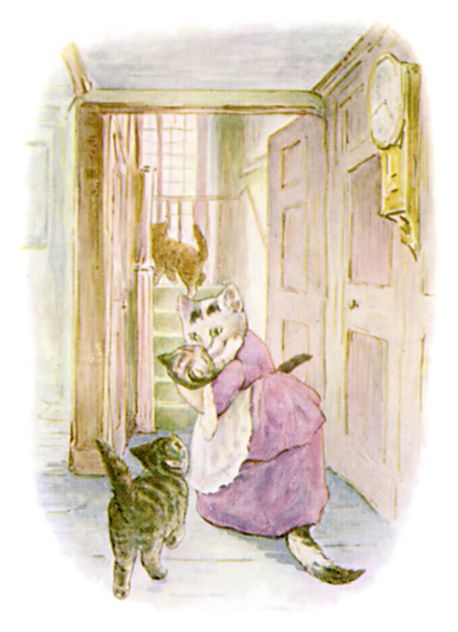
ところが あるひ みんなの ママ ―― ぐいぐいタビサ ―― が おともだちを おちゃへ まねきました。 そこで こねこたちを うちのなかに いれて、 おきゃくさまが つくまでに よごれを おとして きがえを させようとしたのです。
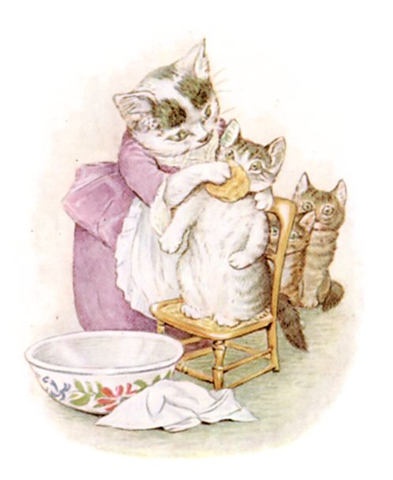
まずは かおを ごしごし。（このこは モペット。）
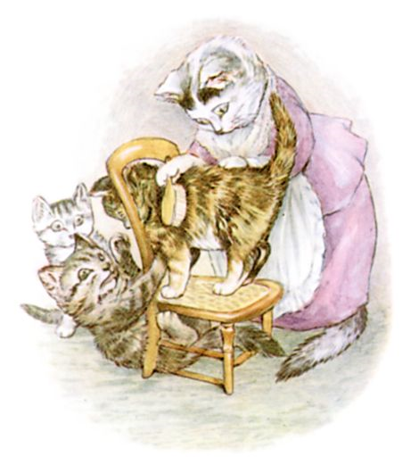
そのあと けなみの おていれ。（このこは ミトンズ。）
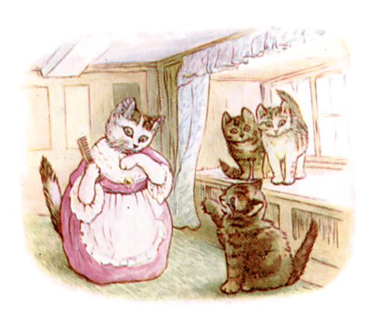
しあげに しっぽと ひげを すきます。（このこが ねこぬこタム。）
タムは とっても やんちゃで やたらと ひっかくのでした。
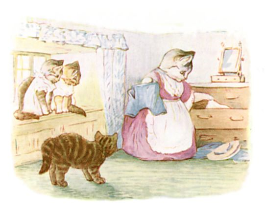
ママの タビサは モペットと ミトンズに あらいたての エプロンドレスと えりかざりを きせます。 つぎに タンスの ひきだしから、 すてきだけど きちきちの ふくを さまざまに とりだして、 むすこの タムの きがえを かんがえました。
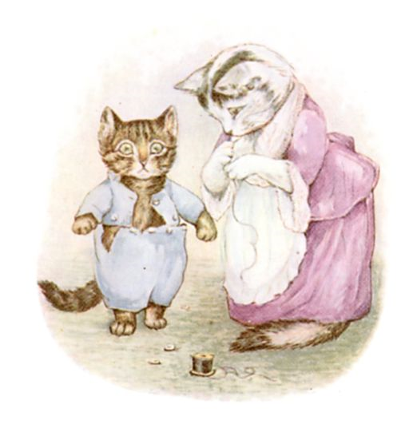
ねこぬこタムは ぷくぷく ふとって おおきくなっていましたので、 ボタンが いくつも はじけとんでしまって。 おやとして また ぬいつけることに。
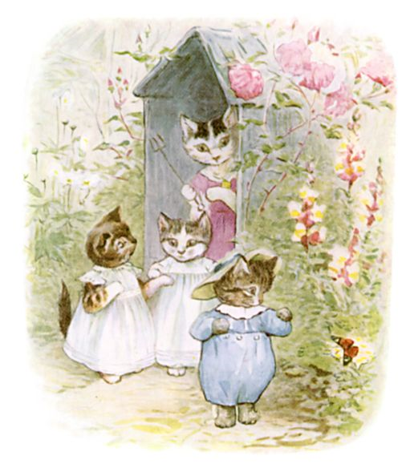
３びきの こねこの したくが できると、 ママの タビサが あろうことか みんなを にわへと だしてしまって。 バタートーストが やきあがるまでの やっかいばらいの つもりだったのですが。
「いいこと、 ふくを よごさないこと！ うしろあしだけで あるくように。 はいだめは きたないから ちかよらない、 それから へにぺにサリーにも、 あと ぶたごやも、 みずかきさんたちにもね！」
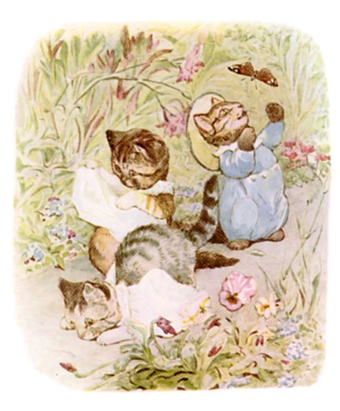
モペットと ミトンズは ふらふら にわの こみちを くだっていきます。 たちまち エプロンドレスを ふんづけて、 はなから じめんに つっこんで。
たちあがったときには みどりの しみが あちこちに！
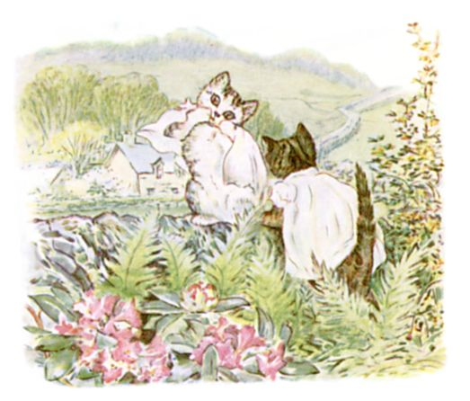
「あっちの いわの おにわに のぼって、 へいに こしかけよっ。」と モペット。
エプロンドレスを うしろまえにして ぴょんぴょん スキップしながら いきました。 モペットの しろい えりかざりが みちばたに おっこちます。
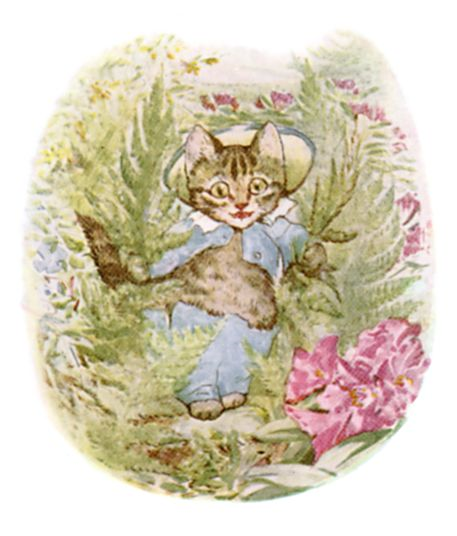
ねこぬこタムは ずぼんを はいたままの うしろあしでは うまく とべず、 あるくしか ありません。 いわの にわまで ゆっくり すすみながら、 しだを ひっかけたり、 ボタンを みぎにひだりに ぽろぽろ おとしたり。
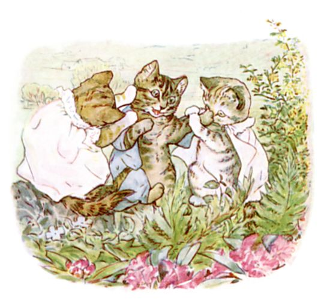
へいの てっぺんに たどりつくころには もう どこもかしこも むちゃくちゃで。
モペットと ミトンズが ふたりして タムを なんとかしようと しましたが、 ぼうしは ぬげるわ のこった ボタンも はじけとぶわで。
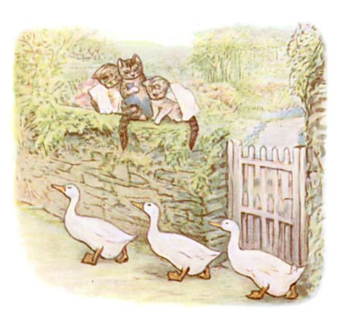
と、 なんぎしていると そこへ ぺたぺた みずかきの あしおとが！ つづいて ３びきの あひるが かたい じめんの おおどおりを あるいてきまして、 れつに なって あしを のばしたまま ―― みぎ ひだり ―― ぺっぺっ たんたん！ よちよち よたよた！
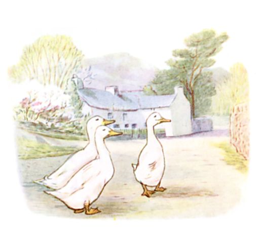
３びきは たちどまり、 よこに ならんで こねこたちを みあげます。 そのちいさな めは びっくりしているみたいで。
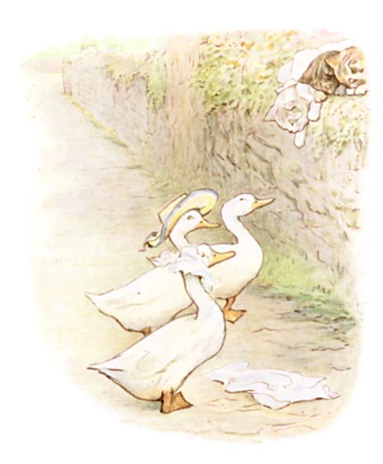
すると ２ひきの あひる、 みずかきリベカと みずかきジェマイマが ぼうしと えりかざりを ひろいあげ、 じぶんたちで かぶってしまって。
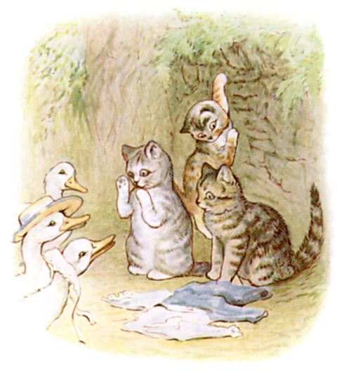
ミトンズは おなかを よじらせ、 へいから おっこちました。 モペットと タムも あとを おって したに おります。 エプロンドレスも のこった タムの ふくも まとめて そのときに ぬげおちて。
「ねえ！ みずかきドレークさん。」というのは モペットです ――「こいつの きがえ てつだってよ！ タムの ボタンを とめるの！」
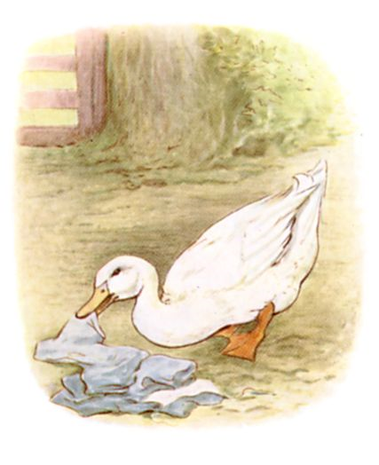
みずかきドレークさんは よこあるきに うごいて、 いろいろあったものを みんな ひろいあげました。
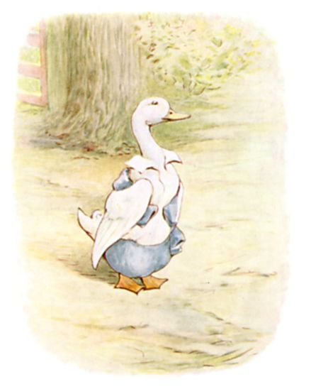
ところが それを ぜんぶ じぶんで きてしまって！ すると タムいじょうに あわない にあわない。
「うむ、 ごきげんよう！」と みずかきドレークさん。
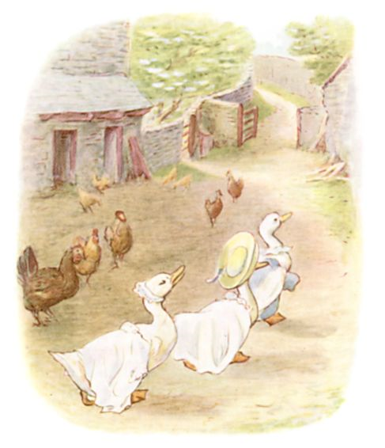
そうして みずかきドレーク、 ジェマイマ、 リベカの ３びきは みちの さきへと すすみだしまして ―― あしなみ そろえて ―― ぺっぺっ たんたん！ よちよち よたよた！
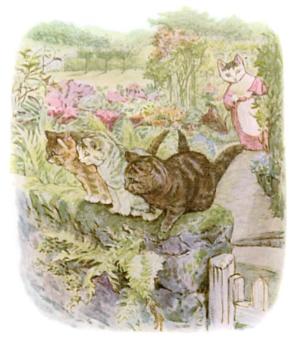
そこへとうとう ぐいぐいタビサが にわへと やってきて、 へいのうえで はだかになっている こねこたちを みつけたわけです。
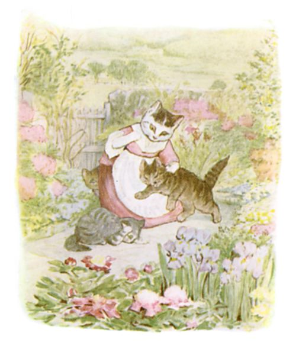
へいから ひきずりおろされ、 おしおきされ、 こねこたちは うちへと つれもどされました。
「おともだちが もうすぐ つくっていうのに、 これじゃ ひとまえに だせないわ。 はずかしい。」と ママの ぐいぐいタビサ。
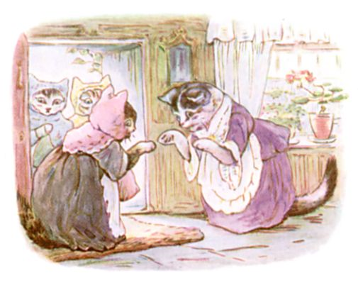
３びきは うえのかいへと つれていかれ、 あんまりなことに ママの おともだちへは はしかで ねていることに されまして。 もちろん うそです。
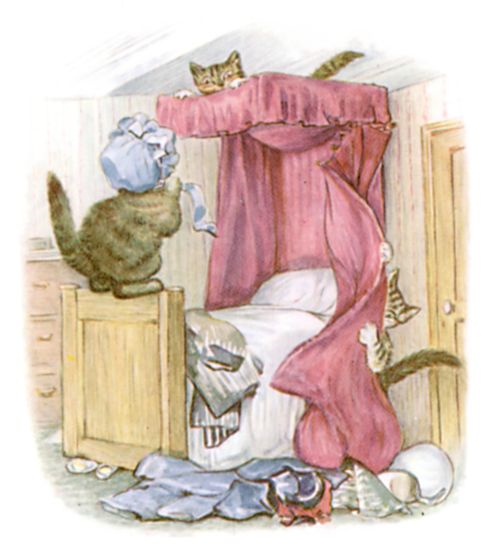
まったく それどころか、 ねていないどころの はなしでは なくって。
どういうわけか ほんとうに おかしなくらい ひどい ものおとが うえから してきまして、 おちゃかいは ふんいきも おちつきも だいなし。
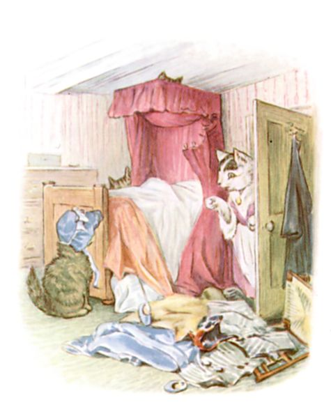
と ここまで。 ねこぬこタムの おはなしは またいつか もっと おおきな ほんで おはなしすることに なるでしょう！
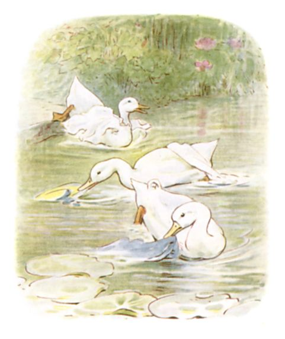
さて みずかきさんたちですが ―― そのあと いけに ゆきまして。
ボタンが なかったから ふくも ぜんぶ そのまま ぬげおちてしまいまして。

それで みずかきドレークさんと ジェマイマと リベカは いまだに ずっと さがしているのですよ。
（おしまい）